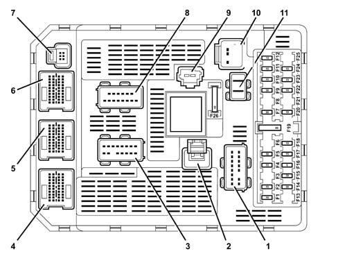
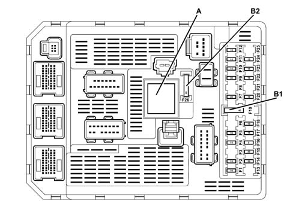

BODY COMPUTER NODE (NBC)
- Path
- Descriptions > 55 ELECTRICAL EQUIPMENT > 5505 INSTRUMENT/GAUGE ELECTRICAL CIRCUITS > 5505A MULTI-FUNCTION COMPONENTS > BODY COMPUTER NODE (NBC)
- Kind
- system description
- Applies to
- all engines; all production periods
- Interactive page
- https://sloeber94.github.io/elrnDB-fUlss/en/#/179000084
Applies to: all engines; all production periods
INTRODUCTION
Il Nodo Body Computer (NBC) è un componente elettronico costituito da una base hardware e da un'interfaccia software - hardware (ILM).
Il NBC garantisce le seguenti funzioni:
- le funzioni di Carrozzeria (illuminazione, visibilità, memorizzazione, protezione dell'abitacolo, ...)
- una parte delle funzioni di erogazione e di protezione delle alimentazioni elettriche dei componenti dell'abitacolo.
- la funzione di interscambio delle informazioni tra le reti CAN e VAN.
- la funzione di interfaccia con la linea di diagnosi per le funzioni d'allarme, climatizzazione, airbag, le pulsantiere di comando sulle porte, lo schermo, l'autoradio, il CDC, il navigatore, il radiotelefono, il NQS ed il FAP (i nodi su rete VAN non sono collegati alla presa di Diagnosi).
La funzione di erogazione e di protezione delle alimentazioni può essere di 3 tipi:
- uscite a relè e protette (semplici o mezzo ponte)
- uscite protette
- uscite a transistor (smartpower)
Relay protected components
Simple outlet:
Outlets | FUNCTIONS |
|---|---|
1 | rear fog lamp |
2 | left front, left rear, trailer light |
3 | right front, right rear, no. plate light, buttons |
4 | heated rear windscreen |
5 | rear windscreen wiper |
6 | +van-car1 |
+van-car2 | |
7 | +van-CONFORT |
Outlet by means of bridge:
OUTLETS | FUNCTIONS |
|---|---|
1 | locking |
2 | unlocking |
3 | superlocking |
Components protected by fuses
OUTLETS | FUNCTIONS |
|---|---|
1 | ignition key at "ACC" |
2 | ignition key at "MAR" |
3 | diesel additive |
4 | diagnostic socket |
5 | child locks |
6 | alarm, radio, telephone, display, climate control, navigator, steering wheel node |
7 | sun roof |
8 | front electric windows |
9 | rear electric windows |
10 | Brake light |
Components controlled by transistor (smartpower)
OUTLETS | FUNCTIONS |
|---|---|
1 | bonnet release |
2 | left direction indicators |
3 | right direction indicators |
4 | bonnet light |
5 | underdashboard light |
6 | running board light |
7 | courtesy lights |
8 | evaporator compressor |
The NBC interfaces with the other vehicle nodes by means of four networks:
- a multi-master type CAN known as an intersystems network (I.S.) which connects the NBC to the nodes which supervise the mechanics in general (engine management, ABS, information for the driver, etc.),
- a multi-master type VAN known as a COMFORT network which connects the NBC to the information or comfort equipment,
- a master/slave type VAN divided into two sub sectors also known as BODYWORK networks: the VAN CAR1 groups together the steering column switch unit/AIR BAG module functions; the VAN CAR2 is dedicated to the management of Safety functions (Alarm), the opening devices (Sun Roof Node, Sliding Door Node), the FAP (NAD), the Steering Position Node and the Driver's Door Node (NPG) and Passenger Door Node (NPP).
The NBC is also connected to some sensors and actuators and to the diagnostic socket.
NBC ROLE AND FUNCTIONS
The NBC carries out the following processing:
- it manages the system operating state,
- it carries out the application programme,
- it saves data,
- it loads codes and manages the diagnostic line,
- it guarantees time management (timer and delays),
- it converses via the VAN and CAN
- it acquires direct inputs,
- it operates the direct outlets (except the networks),
- it operates the system status LED,
- it allows the diagnosis of some direct outlets,
- it provides power supplies,
- it detects a fault in the direction indicator,
- it measures the engine oil level.
NBC VERSIONS
The are 3 possible different NBC configurations.
In the low range configuration the NBC implements the following functions:
- front electric windows,
- heated seats,
- automatic climate control with air temperature and solar sensor,
- central locking for the doors,
- rear windscreen wiper.
In the mid-range configuration the NBC implements the following functions:
- automatic climate control with air temperature and solar sensor,
- front running board light (under the door),
- front electric windows,
- rear electric windows,
- electric child locks,
- heated seats,
- central locking for the doors,
- rear windscreen wiper
In the top of the range configuration the NBC implements the following functions:
- rain sensor information management,
- automatic switching on of the lights,
- automatic climate control with air temperature and solar sensor,
- front running board light (under the door),
- front electric windows,
- rear electric windows,
- electric child locks,
- heated seats,
- super locking,
- rear windscreen wiper
OPERATING MODES
There are four operating modes for the NBC:
- "system inactive" mode - supply below 5 volt with all the outlets in stand-by state,
- "system stand-by" mode: if the ignition key is not in the ON position or it is at "ACC" after the delay for the stand-by for the VAN and deactivation of the NBC.
- "system activated" mode in which all the functions are activated.
- "system being activated" mode which corresponds to the initialization of the software which takes place during the activation of the NBC.
ACTIVATION
There are three different causes of activation:
- activation via bus: by means of direct inputs (door opening remote control, hazard warning lights button, headlamp flasher, manual sliding side door),
- activatation by means of key at "ACC" or key at "MAR",
- activation by means of direct inputs: door unlocking, door opening (when the vehicle is unlocked) action of bonnet release button, courtesy lights on button, locking button, tailgate contact closure, no fuel tank cap.
FORCED SWITCHING OFF/ON OF LOADS
The NBC is equipped with a control function for the electrical loads to prevent overloading (deactivation of electrical consumers) or to force the engagement of the alternator (activation of electrical consumers).
Forced deactivation of electric loads
The load deactivation function is designed to prevent the battery from being run down or even ruined through the application of temporary current interruptions.
The NBC intervention levels are as follows:
- level 0: no deactivation
- level 1: interruption of heater plugs power supply (if supplied for the function of the artificial regeneration of the particle filter),
- level 2: interruption of engie cooling fan power supply, at medium speed (if supplied for the function of the artificial regeneration of the particle filter),
- level 3: interruption of engie cooling fan power supply, at low speed (if supplied for the function of the artificial regeneration of the particle filter),
- level 4: interruption of the heated rear windscreen power supply (if supplied for the function of the artificial regeneration of the particle filter),
- level 5: interruption of the heated rear windscreen power supply (if the activation time is > 6 mins) if authorized by the Climate Control Node,
- level 6: reduction in the climate control fan speed (with automatic type climate control),
- level 7: interruption of the compressor power supply (with automatic type climate control).
With a manually operated climate control system, the compressor is not switched off because the NBC does not recognize the climate control fan rotation speed.
Forced activation of electric loads
The forced activation of certain electrical loads required by the Engine Management Node for the regeneration of the particle filter does not take priority.
The forced activation levels are as follows:
- level 0: no forced activation,
- level 1: heated rear windscreen power supply,
- level 2: engine cooling fan, low speed, power supply,
- level 3: engine cooling fan, medium speed, power supply,
- level 4: heater plugs power supply.
CONNECTIONS AND PIN LAYOUT
The NBC includes 11 connectors

- 1 - PH1: 16-way Grey (Power to passenger compartment cable loom)
- 2 - PL1: 1-way Black (Heated rear windscreen)
- 3 - PH2: 16-way Black (Power to passenger compartment cable loom)
- 4 - EH2: 40-way Grey (Electronics to passenger compartment cable loom)
- 5 - EH1: 40-way White (Electronics to passenger compartment cable loom)
- 6 - EP1: 40-way Black (Electronics to main cable loom)
- 7 - EA: 6-way Black (Accessories electronics: alarm passenger compartment cable loom)
- 8 - PP: 16-way Green (Power to main cable loom)
- 9 - AA: 2-way Black (Power supply with ignition key at "ACC" or at "MAR")
- 10 - PB: 10-way Black (Power to dashboard cable loom)
- 11 - AP: 2-way Grey (Power supply +BATT 1, +BATT 2)
PH 16-way GREY
Pin | Function |
|---|---|
1 | key at "ACC" U NBC (Cigar lighter) |
2 | + BATT U NBC / key at "MAR" (NVO) |
3 | + VAN CAR 2 (sliding doors, front, rear, child lock relay, electric seats, NPS, NTA) |
4 | + VAN CAR 1 (NVO, NAB) |
5 | not connected |
6 | key at "MAR" U NBC (front electric windows control, NCA, NCL, NSS) |
7 | not connected |
8 | + BATT U NBC (rear door electric window motors) |
9 | + BATT U NBC (front door electric window motors) |
10 | U sun roofs |
11 | + VAN CAR 2 (front door electric windows.) |
12 | + U NBC WARNING LIGHT OPERATION |
13 | door locking control |
14 | key at "MAR" U NBC NP (Air Bag Computer) |
15 | door unlocking control + |
16 | door superlocking control + |
PL 1-way BLACK: LUCH CONTROL (heated rear windscreen)
PH1 16-way BLACK
Pin | Function |
|---|---|
1 | right rear brake lights control |
2 | not connected |
3 | not connected |
4 | fog lights power supply |
5 | rear windscreen wiper motor control |
6 | not connected |
7 | reversing light power supply |
8 | not connected |
9 | not connected |
10 | left rear brake lights control |
11 | right rear side light power supply |
12 | + ACC NBC OUTLET (courtesy lights, reversing, electro-chrome) |
13 | right rear direction indicator |
14 | left rear direction indicator |
15 | left rear side light power supply |
16 | +BATT NBC outlet (child lock motors) |
EH2 40-way GREY
Pin | Function |
|---|---|
1 | not connected |
2 | bonnet release control + |
3 | not connected |
4 | bonnet lighting control |
5 | not connected |
6 | rear courtesy light control |
7 | underdashboard lighting power supply |
8 | not connected |
9 | rear windscreen wiper motor fixed stop control |
10 | not connected |
11 | VAN DATA CAR 2 (NTA) |
12 | not connected |
13 | VAN DATA.B. CAR 2 (NTA) |
14 | locking information |
15 | front courtesy light/switching off information |
16 | bonnet contact open information |
17 | bonnet outside contact info |
18 | not connected |
19 | not connected |
20 | not connected |
21 | VAN DATA CAR 2 (seat memory) |
22 | not connected |
23 | VAN DATA.B CAR 2 (seat memory) |
24 | VAN DATA.B CAR 2 (NPS) |
25 | not connected |
26 | VAN DATA CAR 2 (NPS) |
27 | not connected |
28 | not connected |
29 | not connected |
30 | not connected |
31 | not connected |
32 | not connected |
33 | not connected |
34 | not connected |
35 | child lock relay outlet closed |
36 | child lock relay outlet |
37 | not connected |
38 | not connected |
39 | not connected |
40 | not connected |
EH1 40-way WHITE
Pin | Function |
|---|---|
1 | not connected |
2 | not connected |
3 | GV CP input |
4 | doors open + left front locking (+superlocking) contact input |
5 | doors open + right front locking (+superlocking) contact input |
6 | dusk sensor signal |
7 | tunnel light signal |
8 | dusk sensor earth |
9 | right rear electric window descent information |
10 | right rear electric window ascent information |
11 | not connected |
12 | rear electric windows inhibition control |
13 | not connected |
14 | rain sensor power supply output |
15 | not connected |
16 | snow selection control |
17 | not connected |
18 | solar sensor signal |
19 | left rear electric window descent information |
20 | left rear electric window ascent information |
21 | VAN DATA.B CAR 2 (NPG) |
22 | + MOT OUTPUT NBC |
23 | VAN DATA CAR 2 (NPG) |
24 | VAN DATA CAR 2 (NPP) |
25 | front courtesy light information |
26 | VAN DATA.B CAR 2 (NPP) |
27 | left front lock unlocking information (superlocking: front lock locking information) |
28 | VAN DATA.B CAR 1 (NAB) |
29 | right front lock unlocking information (superlocking: front lock unlocking information) |
30 | VAN DATA CAR 1 (NAB) |
31 | not connected |
32 | courtesy light control |
33 | door open contact input (right rear) |
34 | door open contact input (left rear) |
35 | handbrake switch information |
36 | not connected |
37 | seat belt not fastened information |
38 | VAN DATA CAR 1 (NVO) |
39 | not connected |
40 | VAN DATA CAR 1 (NVO) |
EP 40-way BLACK
Pin | Function |
|---|---|
1 | water level information |
2 | CAN HIGH |
3 | fixed stop control |
4 | CAN LOW |
5 | front windscreen wiper relay output |
6 | VAN DATA CAR 1 (NCM ) |
7 | diagnostic tester line K NBC |
8 | VAN DATA.B CAR 1 (NCM ) |
9 | left front direction indicator output |
10 | not connected |
11 | EXIT control. ALT. |
12 | not connected |
13 | oil level signal |
14 | oil level - signal |
15 | analogue fuel level gauge earth |
16 | fuel level indicator information 1 |
17 | evaporator sensor control |
18 | evaporator sensor information |
19 | right front climate control output |
20 | not connected |
21 | not connected |
22 | not connected |
23 | not connected |
24 | not connected |
25 | VAN DATA.B CAR 2 (NAD) |
26 | not connected |
27 | VAN DATA CAR 2 (NAD) |
28 | not connected |
29 | oil temperature signal |
30 | average speed relay control |
31 | not connected |
32 | not connected |
33 | not connected |
34 | not connected |
35 | not connected |
36 | KEY LOCK signal |
37 | not connected |
38 | not connected |
39 | not connected |
40 | + MT OUTPUT NBC |
EA 6-way BLACK
Pin | Function |
|---|---|
1 | + BATT OUTPUT NBC / key at "MAR" |
2 | electronic earth |
3 | + WARNING LIGHT output operation NBC |
4 | VAN DATA CAR 2 (NAL) |
5 | + VAN CAR 2 output VAN CAR 2 |
6 | VAN DATA B CAR 2 (NAL) |
PP 16-way GREEN
Pin | Function |
|---|---|
1 | brake light operation |
2 | key at "MAR" U NBC (pedals, diagnostic socket) |
3 | + VAN CAR 1 (NDVM, NAD) |
4 | not connected |
5 | reversing light control |
6 | electronic earth |
7 | compressor control |
8 | bodywork earth |
9 | not connected |
10 | + BATT U NBC (diagnostic socket) |
11 | + BATT U NBC / key at "MAR" (NCA, alarm siren) |
12 | + BATT U NBC / key at "MAR" (NAD) |
13 | left front side light power supply |
14 | + U NBC WARNING LIGHT OPERATION |
15 | right front side light power supply |
16 | not connected |
AA 2-way BLACK: ANTI-THEFT CONTACT
PB 10-way BLACK
Pin | Function |
|---|---|
1 | + BATT U NBC / key at "MAR" (radio, multifunction display) |
2 | not connected |
3 | + VAN CONF (radio) |
4 | + ACC U NBC |
5 | not connected |
6 | + VAN CONF (NSO, NQS, NCL) |
7 | + U NBC WARNING LIGHT OPERATION |
8 | VAN DATA CONF |
9 | vehicle protection timer control |
10 | VAN DATA.B CONF |
AP 2-way GREY: 1 and 2 way + BATT U NCM
PROTECTION
The relays
The relays are all incorporated in the NBC and are not interchangeble with the exception of the LUCH power relay (A) (which is fitted on the NBC and is interchangeable).
The fuses
The NBC is equipped with 26 fuses

- A - Relay: heated rear windscreen LUCH power output
- B1 - Park shunt
- B2 - Luch fuse (F26)
The table below illustrates the specifications of the fuses in the NBC:
Fuse | Amperage | Function |
|---|---|---|
1 | 10A | Rear fog lamp |
2 | 15A | Rear windscreen wiper |
4 | 15A | NBC power supplies |
5 | 10A | Left brake light |
7 | 20A | Map reading courtesy light, cigar lighter, passenger side glove compartment light, automatic interior rear view mirror |
9 | 30A | Front sun roof, front windscreen wipers |
10 | 15A | Diagnostic socket |
11 | 15A | Electronic alarm, Connect infotelematic system, radio, reconfigurable multifunction display, remote controls on the steering wheel, particle filter (JTD versions); |
12 | 10A | Right side light, number plate lights, climate control system controls light, courtesy lights (first, seond and third rows) |
14 | 30A | Central locking, superlocking |
15 | 30A | Rear windscreen washer |
16 | 5A | Air Bag system power supply, NBC power supplies |
17 | 15A | Right brake light, third brake light, trailer brake lights (if fitted) |
18 | 10A | Diagnostic socket power supply, brake and clutch pedal switches |
20 | 10A | Radio power supply via NBC |
22 | 10A | Left side light, trailer side light (if fitted) |
23 | 15A | Electronic alarm siren |
24 | 15A | Electronic brake force distribution (EBD) power supply via NBC |
26 | 40A | Heated rear windscreen. |
NBC diagnostics
The fault diagnosis of the NBC makes it possible to be aware of the input and output states.
It also allows certain outputs to be operated (actuator test).
The fault memory
This is a memory that makes it possible to display the appearance and disappearance of every fault memorized.
Each fault detected is stored in the memory and classified according to the order in which it appears at the corresponding mileage.
The mileage recorded goes up to 65535 km. Beyond this, the recording is made in modules of 65535, e.g.: 11659 ( 2 x 65535 + 11659) will be displayed for 142749 km.
When the allocated memory is full, the recording works on a rotation principle: the new faults will be superimposed on the old ones.